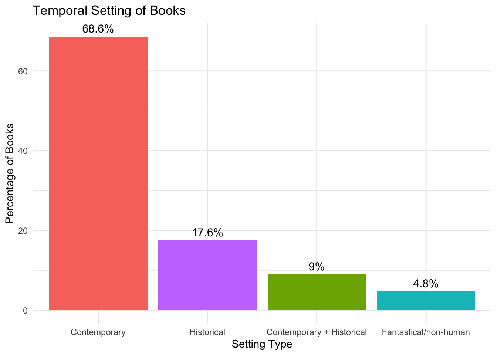
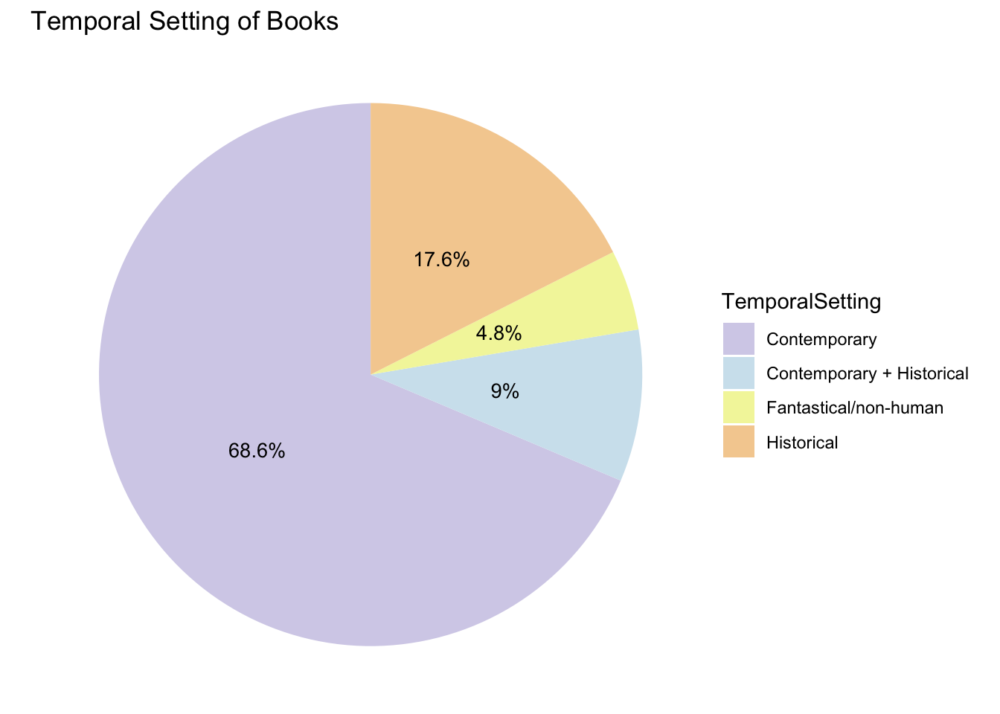

Portfolio 7
The projects should be numbered consecutively (i.e., in the order in which you began them), and should include for each project a description of the goal, the product (computer program, hand graph, computer graph, etc.), the data, and some interpretation. Reports must be reproducible and of high quality in terms of writing, grammar, presentation, etc.
I would like to create some basic visualization for a book coding project. This book coding project is an exploratory study that codes and examines how race/ethnicity is depicted in children’s books about race. By investigating both representation of diversity, types of intergroup contacts, acquired information about race and culture, and intergroup bias reduction strategies, this project aims to understand how the present books talks about diversity and build the first step for future studies to investigate whether certain strategy is more effective in media for bias reduction. One thing I would like to note is that these dataset are from Dr. Katharine Scott, me and Sophie Boyld’s project, and some of the codes are already written by Dr. Scott. My project here mainly focuses on the visualization rather than how to analyze some of the research questions.
For this portfolio, I would like to first, see the overview information about the books.
Step 1: visualization of basic book information
Temporal settings of the books
Question: Are the books contemporary, historical, fantastical, or combination of contemporary and historical?
library(forcats)
table <- table(dWide$temporalSetting)
counts <- as.vector(table)
percentages <- counts / sum(counts) * 100
result <- data.frame(
"TemporalSetting" = names(table),
Count = counts,
Percentage = percentages
)
print(result)## TemporalSetting Count Percentage
## 1 Contemporary (current day) 129 68.617021
## 2 Contemporary (current day),Historical 17 9.042553
## 3 Fantastical/non-human 9 4.787234
## 4 Historical 33 17.553191result <- result %>%
mutate(TemporalSetting = fct_recode(TemporalSetting,
"Contemporary" = "Contemporary (current day)",
"Contemporary + Historical" = "Contemporary (current day),Historical",
"Fantastical/non-human" = "Fantastical/non-human",
"Historical" = "Historical"
))
ggplot(result, aes(x = reorder(TemporalSetting, -Percentage), y = Percentage, fill = TemporalSetting)) +
geom_bar(stat = "identity") +
geom_text(aes(label = paste0(round(Percentage, 1), "%")), vjust = -0.5, size = 4) +
labs(title = "Temporal Setting of Books",
x = "Setting Type", y = "Percentage of Books") +
theme_minimal() +
theme(legend.position = "none")
ggplot(result, aes(x = "", y = Percentage, fill = TemporalSetting)) +
geom_bar(width = 1, stat = "identity") +
coord_polar("y") +
geom_text(aes(label = paste0(round(Percentage, 1), "%")),
position = position_stack(vjust = 0.5), size = 3.6) +
labs(title = "Temporal Setting of Books")+
scale_fill_manual(values = c("Contemporary" = "#d5d1e9", "Contemporary + Historical" = "#d0e4ee", "Fantastical/non-human" = "#F3f5a9", "Historical" = "#f5cf9f"))+
theme_void()
Question: Are the books fiction, non-fiction, or some combination??
table <- table(dWide$fiction)
counts <- as.vector(table)
percentages <- counts / sum(counts) * 100
result <- data.frame(
"Fiction" = names(table),
Count = counts,
Percentage = percentages
)
print(result)## Fiction Count Percentage
## 1 Combination of fiction and non-fiction 46 24.468085
## 2 Fiction 125 66.489362
## 3 Non-fiction 17 9.042553ggplot(result, aes(x = "", y = Percentage, fill = Fiction)) +
geom_bar(stat = "identity", width = 1) +
coord_polar("y") +
geom_text(aes(label = paste0(round(Percentage, 1), "%")),
position = position_stack(vjust = 0.5), size = 4) +
scale_fill_manual(values = c("Non-fiction" = "#EDCBD2", "Fiction" = "#C3E0DD", "Combination of fiction and non-fiction" = "#FAE9DA"))+
labs(title = "Fiction, Nonfiction, or Combination of Both") +
theme_void()
Fiction/non-fiction/combo
Diversity of characters in the book
#Question 4: Who is captured in children’s books about race